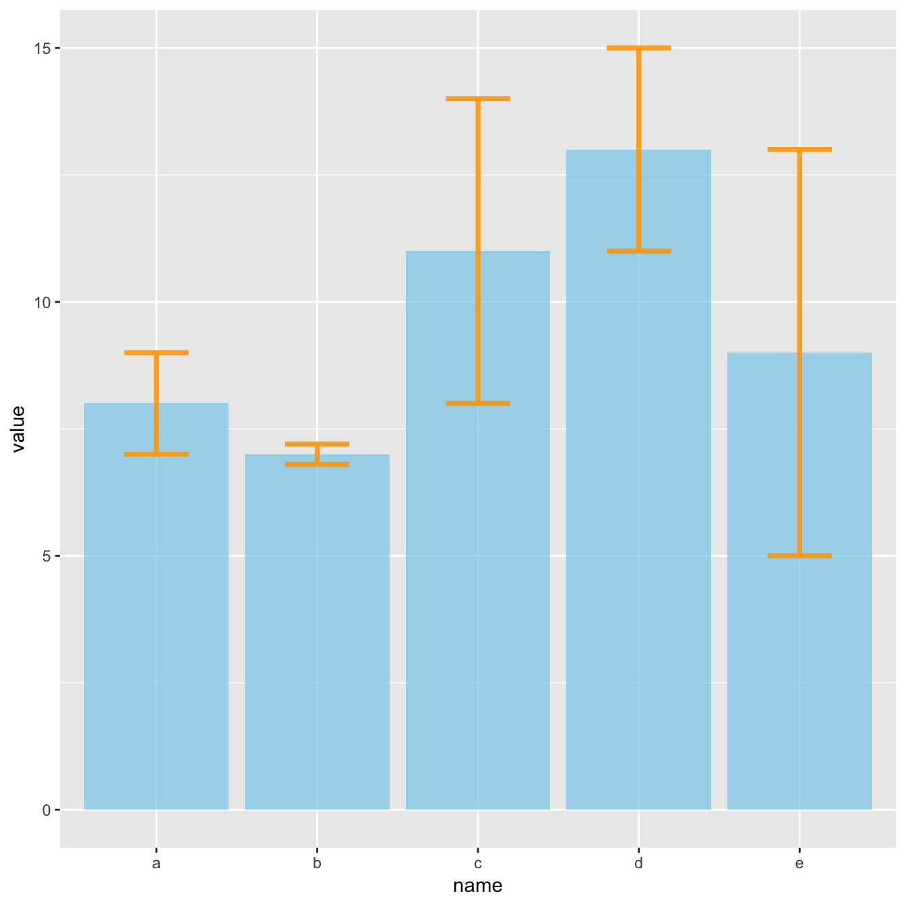
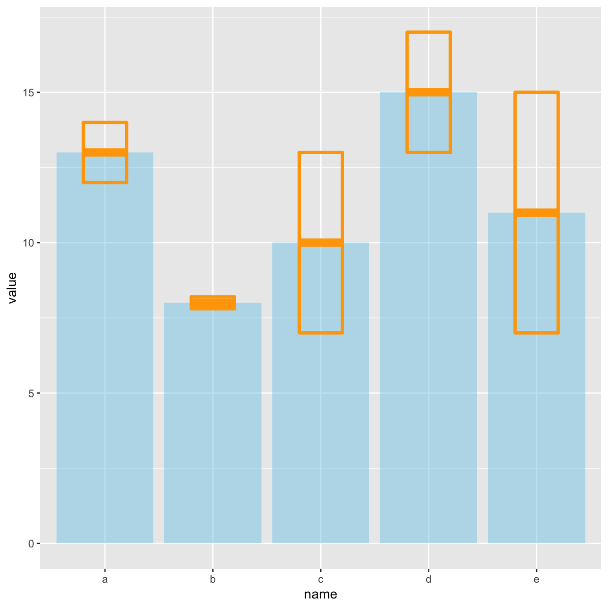
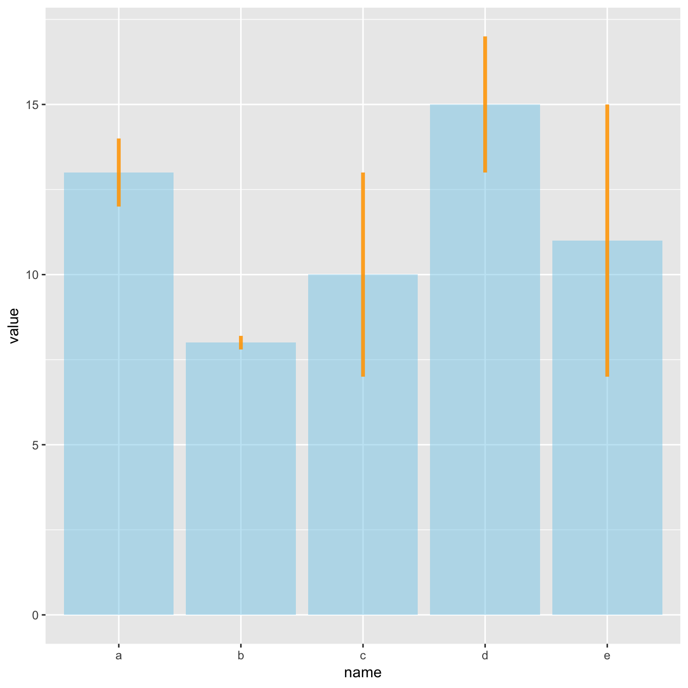
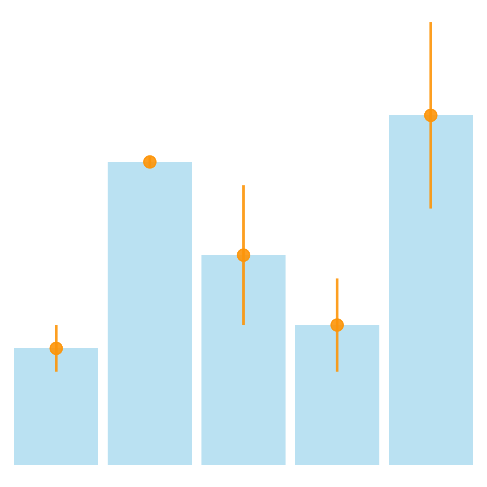
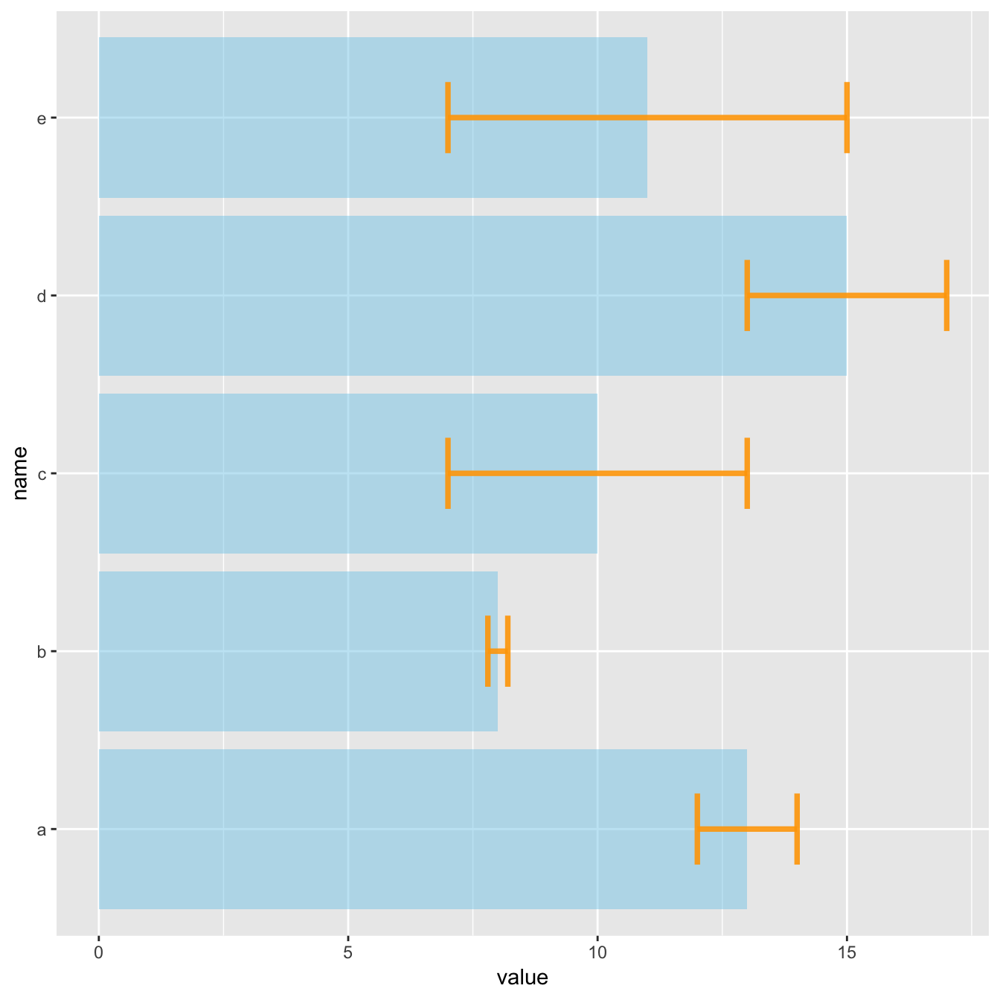
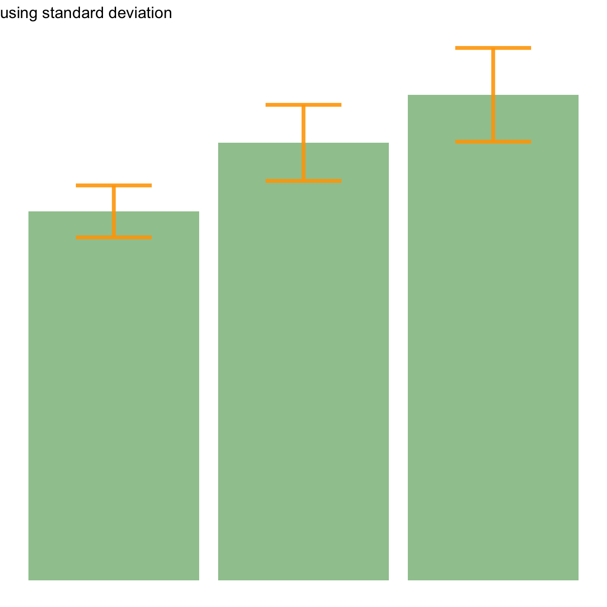
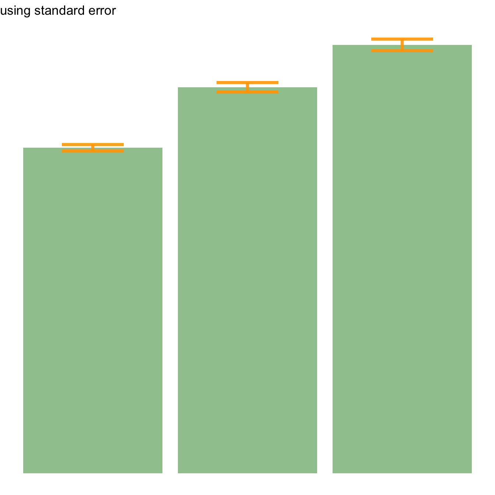
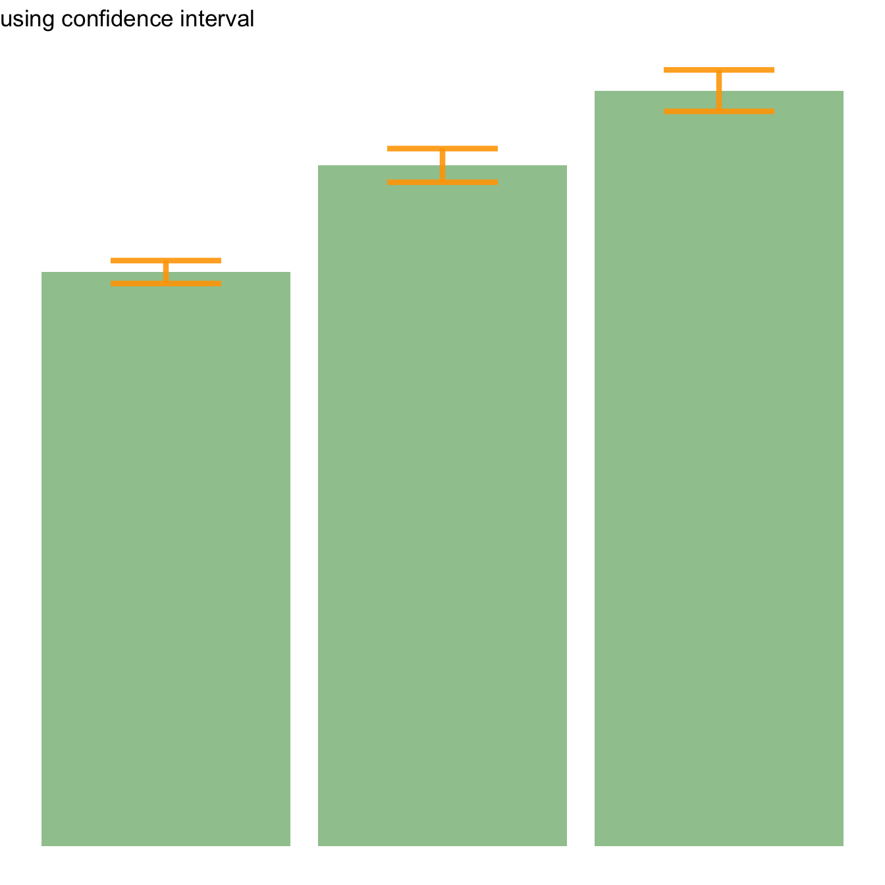
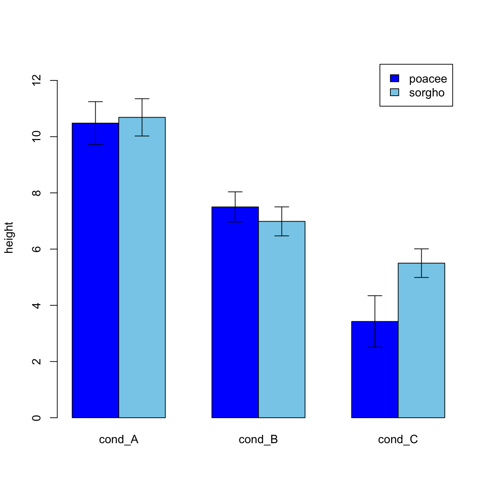

Related chart types

Barplot

Spider / Radar

Wordcloud

Parallel

Lollipop

Circular Barplot
geom_errorbar() functionError bars give a general idea of how precise a measurement is, or conversely, how far from the reported value the true (error free) value might be. If the value displayed on your barplot is the result of an aggregation (like the mean value of several data points), you may want to display error bars.
To understand how to build it, you first need to understand how to build a basic barplot with R. Then, you just it to add an extra layer using the geom_errorbar() function.
The function takes at least 3 arguments in its aesthetics:
ymin and ymax: position of the bottom and the top of the error bar respectivelyx: position on the X axisNote: the lower and upper limits of your error bars must be computed before building the chart, and available in a column of the input data.

# Load ggplot2
library(ggplot2)
# create dummy data
data <- data.frame(
name=letters[1:5],
value=sample(seq(4,15),5),
sd=c(1,0.2,3,2,4)
)
# Most basic error bar
ggplot(data) +
geom_bar( aes(x=name, y=value), stat="identity", fill="skyblue", alpha=0.7) +
geom_errorbar( aes(x=name, ymin=value-sd, ymax=value+sd), width=0.4, colour="orange", alpha=0.9, size=1.3)
It is possible to change error bar types thanks to similar function: geom_crossbar(), geom_linerange() and geom_pointrange(). Those functions works basically the same as the most common geom_errorbar().
# Load ggplot2
library(ggplot2)
# create dummy data
data <- data.frame(
name=letters[1:5],
value=sample(seq(4,15),5),
sd=c(1,0.2,3,2,4)
)
# rectangle
ggplot(data) +
geom_bar( aes(x=name, y=value), stat="identity", fill="skyblue", alpha=0.5) +
geom_crossbar( aes(x=name, y=value, ymin=value-sd, ymax=value+sd), width=0.4, colour="orange", alpha=0.9, size=1.3)
# line
ggplot(data) +
geom_bar( aes(x=name, y=value), stat="identity", fill="skyblue", alpha=0.5) +
geom_linerange( aes(x=name, ymin=value-sd, ymax=value+sd), colour="orange", alpha=0.9, size=1.3)
# line + dot
ggplot(data) +
geom_bar( aes(x=name, y=value), stat="identity", fill="skyblue", alpha=0.5) +
geom_pointrange( aes(x=name, y=value, ymin=value-sd, ymax=value+sd), colour="orange", alpha=0.9, size=1.3)
# horizontal
ggplot(data) +
geom_bar( aes(x=name, y=value), stat="identity", fill="skyblue", alpha=0.5) +
geom_errorbar( aes(x=name, ymin=value-sd, ymax=value+sd), width=0.4, colour="orange", alpha=0.9, size=1.3) +
coord_flip()
Three different types of values are commonly used for error bars, sometimes without even specifying which one is used. It is important to understand how they are calculated, since they give very different results (see above). Let’s compute them on a simple vector:
vec=c(1,3,5,9,38,7,2,4,9,19,19)It represents the amount of dispersion of the variable. Calculated as the root square of the variance:
sd <- sd(vec)
sd <- sqrt(var(vec))It is the standard deviation of the vector sampling distribution. Calculated as the SD divided by the square root of the sample size. By construction, SE is smaller than SD. With a very big sample size, SE tends toward 0.
se = sd(vec) / sqrt(length(vec))This interval is defined so that there is a specified probability that a value lies within it. It is calculated as t * SE. Where t is the value of the Student???s t-distribution for a specific alpha. Its value is often rounded to 1.96 (its value with a big sample size). If the sample size is huge or the distribution not normal, it is better to calculate the CI using the bootstrap method, however.
alpha=0.05
t=qt((1-alpha)/2 + .5, length(vec)-1) # tend to 1.96 if sample size is big enough
CI=t*seAfter this short introduction, here is how to compute these 3 values for each group of your dataset, and use them as error bars on your barplot. As you can see, the differences can greatly influence your conclusions.
# Load ggplot2
library(ggplot2)
library(dplyr)
# Data
data <- iris %>% select(Species, Sepal.Length)
# Calculates mean, sd, se and IC
my_sum <- data %>%
group_by(Species) %>%
summarise(
n=n(),
mean=mean(Sepal.Length),
sd=sd(Sepal.Length)
) %>%
mutate( se=sd/sqrt(n)) %>%
mutate( ic=se * qt((1-0.05)/2 + .5, n-1))
# Standard deviation
ggplot(my_sum) +
geom_bar( aes(x=Species, y=mean), stat="identity", fill="forestgreen", alpha=0.5) +
geom_errorbar( aes(x=Species, ymin=mean-sd, ymax=mean+sd), width=0.4, colour="orange", alpha=0.9, size=1.5) +
ggtitle("using standard deviation")
# Standard Error
ggplot(my_sum) +
geom_bar( aes(x=Species, y=mean), stat="identity", fill="forestgreen", alpha=0.5) +
geom_errorbar( aes(x=Species, ymin=mean-se, ymax=mean+se), width=0.4, colour="orange", alpha=0.9, size=1.5) +
ggtitle("using standard error")
# Confidence Interval
ggplot(my_sum) +
geom_bar( aes(x=Species, y=mean), stat="identity", fill="forestgreen", alpha=0.5) +
geom_errorbar( aes(x=Species, ymin=mean-ic, ymax=mean+ic), width=0.4, colour="orange", alpha=0.9, size=1.5) +
ggtitle("using confidence interval")arrows() functionIt is doable to add error bars with basic R only as well, but requires more work. In any case, everything relies on the arrows() function.

#Let's build a dataset : height of 10 sorgho and poacee sample in 3 environmental conditions (A, B, C)
data <- data.frame(
specie=c(rep("sorgho" , 10) , rep("poacee" , 10) ),
cond_A=rnorm(20,10,4),
cond_B=rnorm(20,8,3),
cond_C=rnorm(20,5,4)
)
#Let's calculate the average value for each condition and each specie with the *aggregate* function
bilan <- aggregate(cbind(cond_A,cond_B,cond_C)~specie , data=data , mean)
rownames(bilan) <- bilan[,1]
bilan <- as.matrix(bilan[,-1])
#Plot boundaries
lim <- 1.2*max(bilan)
#A function to add arrows on the chart
error.bar <- function(x, y, upper, lower=upper, length=0.1,...){
arrows(x,y+upper, x, y-lower, angle=90, code=3, length=length, ...)
}
#Then I calculate the standard deviation for each specie and condition :
stdev <- aggregate(cbind(cond_A,cond_B,cond_C)~specie , data=data , sd)
rownames(stdev) <- stdev[,1]
stdev <- as.matrix(stdev[,-1]) * 1.96 / 10
#I am ready to add the error bar on the plot using my "error bar" function !
ze_barplot <- barplot(bilan , beside=T , legend.text=T,col=c("blue" , "skyblue") , ylim=c(0,lim) , ylab="height")
error.bar(ze_barplot,bilan, stdev)This post was an overview of ggplot2 barplots, showing the basic options of geom_barplot(). Visit the barplot section for more:
Related chart types